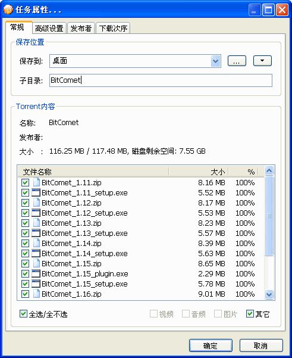
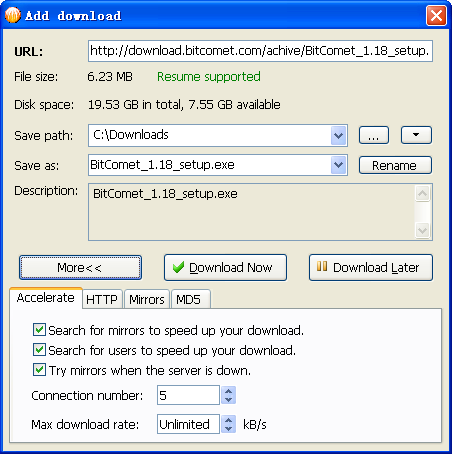

BitComet 版本进化史 — 从 BT 先锋到全能下载器的十七年
BitComet 从 2003 年诞生至今，如何从一款纯 BT 客户端一步步长成覆盖 BT、HTTP、FTP、P2P 加速和远程管理的全能下载工具，以及这条演进路线背后团队的取舍逻辑。
现状：一个还在更新的老牌下载器
我最近重新装了 BitComet——安装包从BitComet下载拿的，原因很简单，家里有一批按编号排列的老资源需要批量拉下来，用浏览器一个个点下载链接太累了。装完打开界面的那一刻，熟悉的感觉扑面而来：还是那个蓝灰色的经典布局，左侧导航栏、中间任务列表、底部详情面板，和我十多年前第一次用它时几乎一模一样。

但用起来就发现不一样了。批量下载里除了按编号生成 URL，还能从网页自动抓取所有下载链接，过滤筛选都做了；限速设置不只是一个总开关，是全局限速、单任务限速、长效种子限速三层体系，叠加取最严格的那个；甚至还有个 WebUI 远程管理——手机浏览器输入个地址就能看家里下载到哪了。
这哪里是我印象里那个"只下 BT 的工具"？
BitComet 的定位早就变了。它现在的BitComet官网把自己叫"全能下载客户端"，BT、HTTP、FTP、磁力链、P2P 加速全覆盖，还内置了远程控制和带宽调度。从 2003 年诞生到现在十七八年，它从一款纯 BT 客户端长成了什么都能下的杂家——但长得并不杂乱，核心逻辑始终没变：让下载这件事尽可能高效、尽可能省心。
来路：三个关键转折点
样本文档里没有版本号时间轴，这点我其实挺意外的。作为一款迭代了近二十年的软件，官方文档对版本历史的留白本身就能说明问题：BitComet 的演进没有那种"划时代大版本跳变"，而是稳扎稳打的渐进式积累。
第一阶段：纯 BT 先锋（2003~2008）
BitComet 诞生在 BT 协议最火的年代。那时候的 BT 客户端选择其实不少——原版 BitTorrent、Azureus（后来的 Vuze）、uTorrent，还有国内的迅雷 BT 模块。BitComet 能活下来并且积累用户，靠的就是几个在当时算得上"超前"的设计。
文件分块对齐是 BitComet 早期的杀招。BT 协议按固定大小分片（通常 512KB 或 1MB），如果一个分片恰好跨在两个文件的边界上，传统客户端为了下载文件 A 的那部分数据，不得不把整个分片（包括文件 B 的那部分）都拉下来再丢掉——这就是选择性下载时的冗余传输。BitComet 制作的 torrent 会自动对齐文件边界到分片起点，彻底消除这个浪费。样本文档里提到的"跳过文件不会占空间"和"选择性下载效率特别高"，根源都在这个早期技术积累。
优先级控制也是同期竞品里做得最细的。从"跳过"到"最高"五档优先级，按文件、按目录都能设，而且是真的影响分片请求顺序——不是个摆设。这个功能在 BT 社区里一度被当成"客户端好不好用"的衡量标准之一。
那时候的 BitComet 是纯 BT 工具，界面上连个 HTTP 下载按钮都没有。它的口碑建立在"BT 种子做规范、选择性下载不浪费带宽"这两点上。
第二阶段：扩展到 HTTP/FTP（2009~2015）
BT 的黄金时代过去了。国内版权收紧、迅雷等下载器崛起、HTTP 直链越来越多——纯 BT 客户端的用户群在萎缩。BitComet 的应对方式不是放弃 BT，而是在 BT 内核上长出了 HTTP/FTP 下载能力。
这个扩展不是简单加个模块，而是把 HTTP/FTP 任务和 BT 任务放进了同一个调度器——队列管理、限速、优先级、磁盘缓存，一套逻辑通用。样本文档里那篇限速设置提到的"三层限速体系"，就是这个阶段打下来的基础：全局限速分 BT 和 HTTP/FTP 两条线互不干扰，单任务限速叠加生效。这个设计让同时跑 BT 做种和 HTTP 批量下载时的带宽分配特别省心——不会出现 BT 做种偷偷把上行占满、HTTP 下载卡成狗的情况。
批量下载功能也是这个阶段加的。按编号生成 URL 模板、从网页抓取链接、导入 URL 列表——这几招让 BitComet 在 HTTP 批量下载场景下比浏览器插件还好用。同期的 uTorrent 始终没做 HTTP 下载，坚守纯 BT 路线；迅雷走的是另一套（P2SP 加速 + 云端离线）。BitComet 选了中间路线：保持客户端本地化、全协议覆盖。
第三阶段：远程与加速（2016 至今）
最近这十年的更新方向很明确：让下载这件事"不用盯着"。
WebUI 远程管理是这个方向的代表作。不用 TeamViewer、不用远程桌面，手机浏览器打开页面就能看任务进度、加新任务、暂停吃带宽的做种——甚至能直接预览正在下载的视频。翻了 BitComet文档 里那篇 WebUI 指南，从端口设置到 HTTPS 加密、从内网穿透到安全配置都写得很细，能看出来这个功能不是个玩具，是认真在做的。

长效种子和 HTTP P2P 加速是另一条线。长效种子让 BT 做种变成后台静默行为，HTTP P2P 加速让直链下载也能从其他用户那里拉分片提速——两个功能合在一起，BitComet 的上传带宽始终"有事做"，下载速度也能在冷门资源上保持得不错。
规律：团队一直在死磕什么
把三个阶段串起来看，BitComet 的演进有一条清晰的主线：让下载这件事从"需要人盯着"变成"可以后台跑"。
从文件优先级让你"先看哪集"不用全下、到限速让你不用半夜起来手动暂停做种、到 WebUI 让你出门在外也能远程操控——团队一直在解决的不是"能不能下载"（这是基础），而是"能不能不操心地下载"。
反过来看，什么东西是 BitComet 始终没做好或者根本没做的：
- 界面现代化：十多年了还是那个蓝灰色经典皮肤，虽然够用但和现在的软件审美差距不小。官方可能觉得"能用就行"，不值得在这上面花精力。
- 跨平台：只有 Windows 版。Mac 用户、Linux 用户只能靠 Wine 或者找替代。这在技术上不是做不到，更像是团队有意放弃的市场选择——集中资源把 Windows 端做扎实。
- 移动端：没有独立 App。WebUI 响应式界面是个凑合方案，但和原生 App 的体验差距明显。同样是优先级取舍。
- 云同步：没有账户体系、没有云端任务队列。所有配置都在本地，换台电脑得从头再来。
这些"没做"的事放一起看，其实是同一个判断：BitComet 要做的是一个强大的本地下载内核，不是一个生态。界面、账户、移动端这些都是生态层的东西，团队的资源始终集中在下载调度器、协议兼容性、带宽管理这些硬核能力上。
预判：照这个路线，下一步会是什么
从样本文档里能感觉到 BitComet 当前版本的几个信号：WebUI 还在完善（HTTPS、中文语言、日志查看）、限速体系还在细化（长效种子单独限速）、批量下载的过滤逻辑还在加强。
我猜接下来的方向大概率是这几个：
第一，WebUI 继续进化。现在的 WebUI 能看能控但不能改全局选项——如果能加上远程调整限速、远程修改调度器策略，远程管理就真正闭环了。移动端体验也可能通过 WebUI 响应式优化来改善，而不是做独立 App。
第二，P2P 加速范围扩大。HTTP P2P 加速已经有了，接下来会不会覆盖更多协议？或者把长效种子和 P2P 加速打通，形成"下载即贡献"的闭环？这个方向和 BitComet 多年来"让上传带宽不闲着"的思路是一致的。
第三，AI 辅助可能来一波。不是那种大模型聊天机器人，而是实用向的：比如自动识别 torrent 内容类型并建议优先级、根据你的带宽使用习惯自动调整限速策略、批量下载时自动过滤掉广告链接和无用文件。样本文档里的批量下载过滤还是手动的，自动化空间挺大。
但我不认为 BitComet 会搞跨平台、不会重做界面、不会加账户云同步。这些是生态层的事，和它十七年来的核心路线不搭。
写在最后
装 BitComet 那天我还在想，这个快二十年的老东西会不会已经没人用了。但打开论坛和反馈通道看了看，讨论区还挺活跃，新版本还在推送——虽然更新频率不算高，但还在稳步迭代。
一款软件能活这么久，靠的从来不是"追新"，而是"把一件事做透"。BitComet 的十七年就是这个逻辑：它从一款 BT 工具起步，慢慢长成了什么都能下的杂家，但内核始终是那个"让下载不操心"的调度器。界面没变、平台没变、定位没变，变的是功能越来越扎实——每加一个功能都在补"不操心"这张拼图。
如果哪天你需要批量拉老资源、需要远程看家里的下载进度、需要精细控制带宽分配，这个老东西大概率还是能顶上。想深挖 BitComet 的版本细节和使用技巧，我在 GitHub、Gitee、GitCode 三处都维护了资料索引，怕某个站点抽风的话多几个备份总没错。